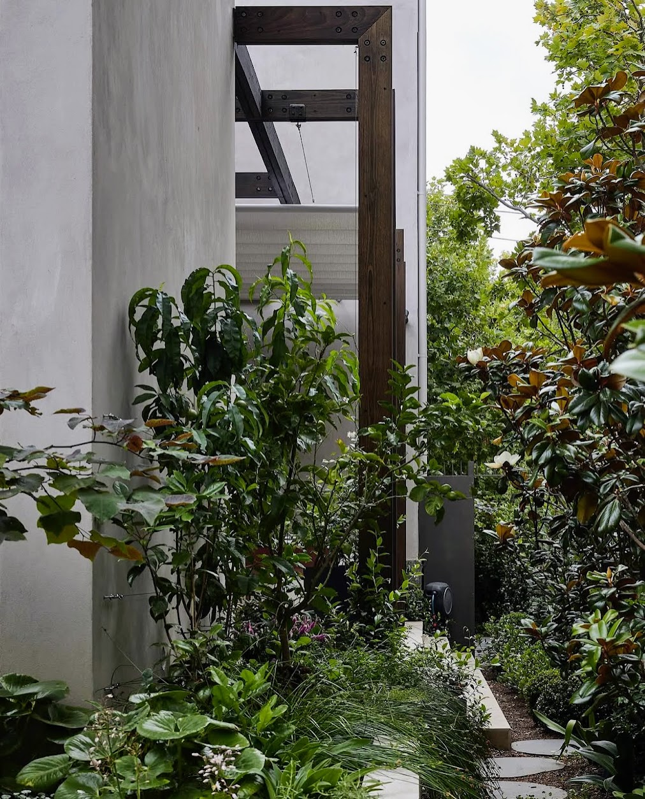
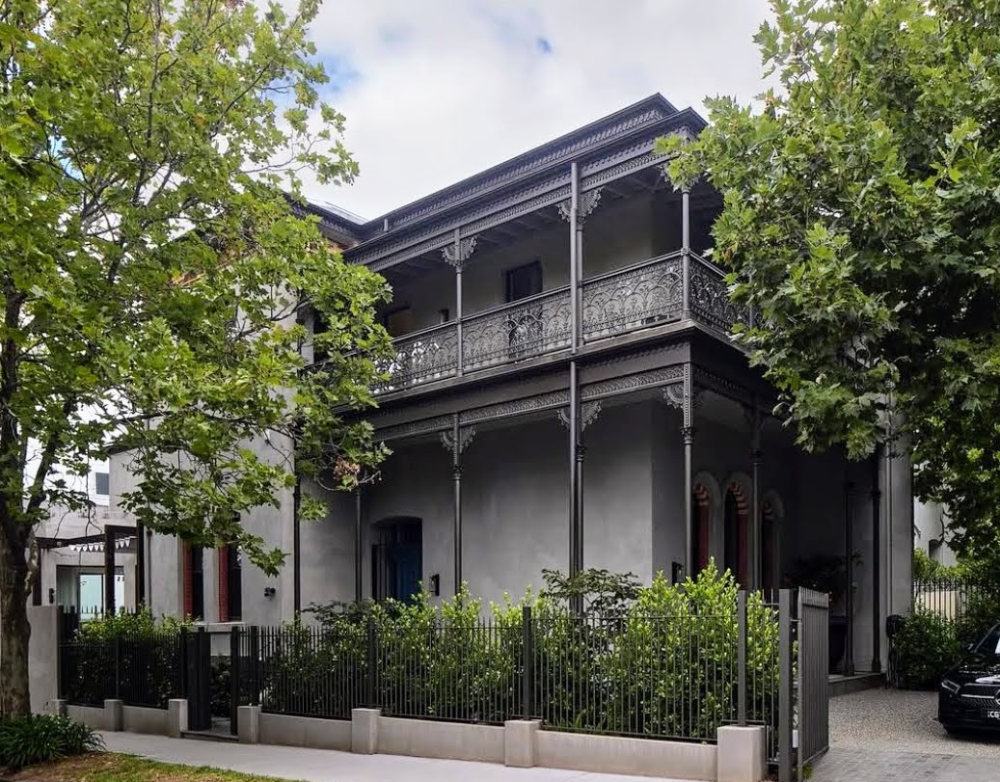

The place
Melbourne Victorian Cottage is an old Victorian cottage set against an expansive backdrop that accentuates the hills in the distance. The front garden is simple and open, capturing the spirit of the house and offering a visual corridor straight through the home to the back garden and the vista beyond.
The brief
The studio was commissioned to develop an all native Australian garden — a place of peace and reflection — a garden grounded in care, memory, and interconnection. The brief required a sustainable environment that adjusts the landscape's balance, honoring old childhood haunts: the clients' memory of wildlife, old growth trees, and a small pond. Because they are away for most of the year living in Utah, their time spent here focused on adding new native elements and caring for the planting — they also needed guidance on finding a team of hired gardeners to care for the garden while away. The ultimate goal was the alchemy of a perfect song — a multi-layered garden that lifts wellbeing and provides a home for Melbourne's native birds, including the Fairy-wren, Willie Wagtail, Galah, and Australian Wood Duck, alongside specialized bushland species like honeyeaters, Rainbow Lorikeet, and Sulphur-crested Cockatoo.
The design
The layout balances a bold, painterly naturalistic approach with a responsive and integrated consideration of the site's inherent sense of place — the client, who is now in his late seventies, shared a story of his father, born in the front room of this old Victorian cottage. While the form of the garden came with an ease and effortlessness, its meaning has been shaped over decades with the surrounding environment, its own story written into the narrative of their family history.
The Grassland Understory: An eclectic mix of native and exotic grasses forms the foundation, where success is measured by the wild birds moving through the foliage.
The Structural Pace: To give the garden its roots, a native tapestry of biodiversity was carefully selected — the borders are woven with tough regional natives that thrive in the Melbourne climate: structural golden wattles (Acacia), bold banksias, and native heathers, all under an aromatic drift of lemon-scented eucalyptus.
The Northern Border & Pathways: Right up to the cottage verandah is an abundant mix of endemic grasses, perennials, and succulents.